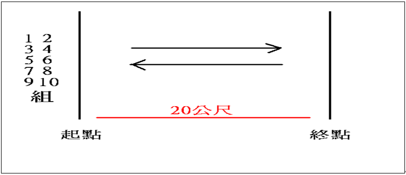
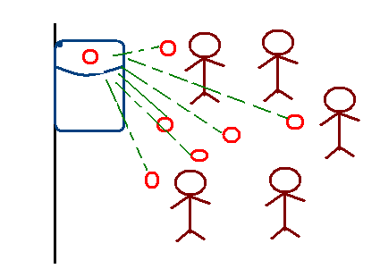
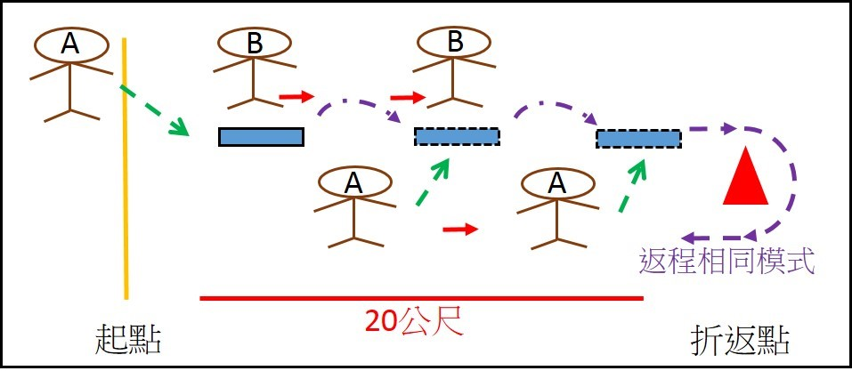

國立成功大學慶祝八十四週年校慶暨運動大會 教職員工趣味競賽競賽規程
壹、活動宗旨：
慶祝本校校慶，培養團隊合作精神與聯絡師生情誼，特辦理本活動。貳、比賽日期
於本校校慶當日進行比賽參、比賽地點
本校光復校區田徑場舉行。肆、競賽項目
1.背背有練過（參賽人數12人） 2.大家來投籃（參賽人數12人） 3.造橋鋪路(參賽人數12人)伍、報名辦法
1.請至本室網頁完成線上報名即可 2.教職員組可利用隨附紙本報名表或本室校慶運動會 網頁下載報名表，聯繫體育室洪珮珊小姐50387， 傳真2766427， z10306006@email.ncku.edu.tw 3.三、 報名日期：104年10月1日(星期四)上午9點起至10月26日(一)下午5點截止。陸、比賽規則
(一) 背背有練過（參賽人數12人）規則說明： 1.第一組參賽者將籃球放在由三人手勾手且背靠背所構成的區域，由起點線出 發，至折返點返回起點交給下一組，以此類推，如有違規單次加總成績10秒。 2.行進當中如果球掉了,必須由兩人在原地等待，另一人將球放回指定區域後始 得繼續前進。 3.全部人員最快完成者且秒數少者之隊伍為獲勝。

(二) 大家來投籃（參賽人數12人）規則說明：
1.由其中一位隊員拿支稱籃框之竹竿，槍聲響時，每隊參賽者將網球投入該隊之
籃框中，共有50顆。
2.持竿者不可移動竹竿，時間為60秒，以籃框中球數最多者獲勝，如有違規扣5顆

(三) 造橋鋪路（參賽人數12人）規則說明：
1.器材：海綿墊。
2.人數：每隊12人
3.方法：一隊兩塊墊子，由一人鋪墊子，另一人踩在墊子上前進。(花費時間最
短者獲勝)
a.起點A處至往返點B處相距20公尺，往返一組40公尺。
b.一人拿墊子鋪路一人往前行，前進者必須站在墊子上才能進行下一步，至B處)
折返回到A處交由下一組出發，不得碰觸折返點角錐，如有違規單次加總成績10 秒。
